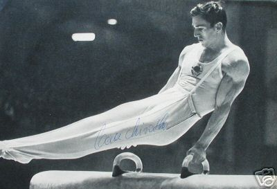

Miroslav Cerar (YUG)
2-Time Olympic PH Champion (1964 and 1968)
3-Time World PH Champion (1962, 1966, 1970)
2-Time European AA Champion (1961 and 1963)

Medal Total
Olympic
Games:
2 Gold, 1 Bronze
World Championships: 4 Gold, 2 Bronze
European Championships:
10 Gold, 5 Silver, 5 Bronze
Miroslav was born on October 25, 1939 in Ljubljana. He got a late start in gymnastics (age 12), but by age 17 he competed in --and won --his first international competition (a dual meet with Czechoslovakia). He was one of the most successful gymnasts of the 1960s. He's now a lawyer, as is his daughter Alenka, and is a member of the Slovenian Olympic Committee.
Competition Results
1958
World Championships: 6th Team, 13th AA, 3rd PH
YUG-GDR Dual Meet: 1st Team, 1st AA
1960
Olympic Games: 9th Team, 8th AA, 5th HB
1961
European Championships: 1st AA, 1st PH,
1st R, 1st PB, 3rd V, 4th HB
1962
World Championships: 10th Team, 5th AA, 1st PH, 1st
PB, 6th R, 6th HB
1963
European Championships: 1st AA, 1st PH,
1st R, 1st HB, 2nd V, 3rd FX
Mediterranean Games: 1st AA
1964
Olympic Games: 11th Team, 7th AA, 1st PH, 3rd
HB, 6th PB
1965
European Championships: 4th AA, 1st PB, 2nd
FX, 2nd PH, 3rd R
University Games: 2nd AA, 1st HB, 3rd FX
1966
CSSR-YUG-GBR Meet: 1st AA, 1st FX, 1st PH, 1st R, 1st PB, 1st HB,
2nd V
World Championships: 7th Team, 4th AA, 1st PH, 3rd
PB, 4th HB
YUG-Ukranian SSR Dual Meet: 1st AA
1967
European Championships: 4th AA, 2nd PH, 3rd
HB, 4th R, 5th PB
Pre-Olympics: 4th aA
1968
Olympic Games: 6th Team, 9th AA, 1st PH
1969
European Championships: 4th AA, 1st PH, 2nd
PB, 3rd HB, 4th FX
World Cup: 3rd AA
1970
Blume Memorial: 2nd AA
World Championships: 4th Team, 9th AA, 1st PH
This page was created on March 18, 2000
and was last updated on January 07, 2011.
© Gymn Forum